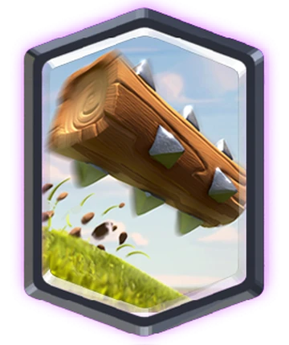
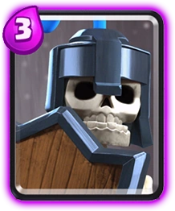
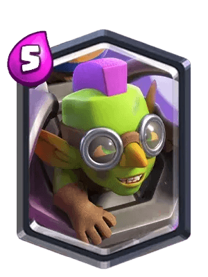

No juegues a ciegas. Analizamos el meta actual para darte las cartas que garantizan victorias en la Arena.

"Esta lista no es una simple opinión. Nuestro ranking del Top 10 se basa en un análisis exhaustivo de la tasa de victorias en los desafíos, el uso en los mazos de Leyendas y las sinergias clave en el Ladder. La información se actualiza semanalmente para reflejar los últimos cambios de balance."
El Rey del Castigo. Olvídate de los hechizos baratos. El Rayo es tu herramienta de destrucción masiva, diseñada para castigar las defensas estáticas y los pushes lentos. No solo destruye Torres Infernales y recolectores; su verdadero valor radica en eliminar hasta tres unidades clave (Brujas, Magos, Mosqueteras) que el rival pone detrás de la torre, garantizando un contraataque letal. ¡Es el ultimátum del Elixir!

La Leyenda Veloz. El Berserker no solo es una unidad cuerpo a cuerpo rápida y agresiva que inflige daño considerable; su potencial real se desbloquea al morir. Su Furia (Rage) es el potenciador más temido del juego. Ya sea que lo uses para acompañar un globo o un Golem, su timing con el hechizo de Furia que deja caer es la clave para romper el ciclo de defensa del oponente y asegurar esa corona.

El Limpiador de Mesa. Un clásico atemporal que sigue siendo indispensable. En un meta lleno de enjambres (Esbirros, Barril de Goblins, Ejército de Esqueletos), las Flechas ofrecen el mejor retorno de Elixir para limpiar la zona de forma inmediata. No se trata solo de daño; es la garantía de que ese push de 5 Elixir no se detendrá por una Horda barata. Simplicidad, efectividad y confiabilidad.

El Demoledor de Tanques. El Mini P.E.K.K.A. es el especialista en daño de un solo objetivo más rápido y contundente de la Arena. Su trabajo es simple: eliminar todo lo que cueste 5+ Elixir (Gigantes, Golems, Montapuercos) con una eficiencia brutal. Es la respuesta perfecta y económica si tu mazo sufre contra las unidades con alta salud.

El terror de los duendes y cartas frágiles. 😲 El tronco atraviesa y aplasta todo a su alrededor, dejando caos y destrucción inigualable. 🔥 Es una carta que cuesta poco elixir pero resulta muy rentable. 🥵
Nacidos del eco metálico de una batalla perdida, los Guardias avanzan con paso firme, escudos en alto y espíritu indomable. ⚔️ Aunque sus huesos sean apenas polvo y su carne un recuerdo, su lealtad sigue intacta. Tres esqueletos blindados que, cuando pierden el escudo, desatan su furia final. ¡Golpéalos una vez y volverán por más! 🧱 Tres cuerpos, tres escudos, y cero ganas de rendirse.
¿Quién pensó que darle un motor a un Goblin era buena idea? 💥 Desde lo alto, la Máquina Goblin dispara dardos como si le pagaran por cada susto que provoca. Es veloz, molesta y difícil de atrapar; justo como los Goblins que la conducen. Cuando cae, no llora… ¡explota! dejando una sorpresa que ningún enemigo olvida. ✈️ Un invento que prueba que los Goblins deberían tener menos herramientas... y más supervisión.
Hechizo, Tropas y Empuje. El Barril de Bárbaro es el reemplazo perfecto del Tronco en muchos mazos. Por solo 2 de Elixir, obtienes daño de área + un empuje (como el Tronco) Y una unidad de defensa (el Bárbaro). Su capacidad para generar valor positivo y forzar una defensa mínima lo mantiene en la élite.

La Horda Aérea Económica. A pesar de ser una carta común, los Esbirros siguen siendo una de las mejores opciones aéreas de bajo coste. Su alto daño por segundo es ideal para eliminar tanques de tierra o para despachar unidades clave antes de que lleguen a la torre. Su bajo coste de Elixir los hace perfectos para ciclar el mazo rápidamente y responder a amenazas aéreas sin comprometer el Elixir
El Nuevo Control Absoluto. La Enredadera es, sin duda, la carta que define el meta actual. Su habilidad para paralizar completamente a las unidades terrestres, bloquear un carril entero y absorber el daño mientras hace un stun es inigualable. Es la herramienta definitiva de tempo y control. Usarla correctamente significa que tu rival tendrá que gastar el doble de Elixir solo para cruzar el puente. ¡Si no la tienes, estás jugando en desventaja!